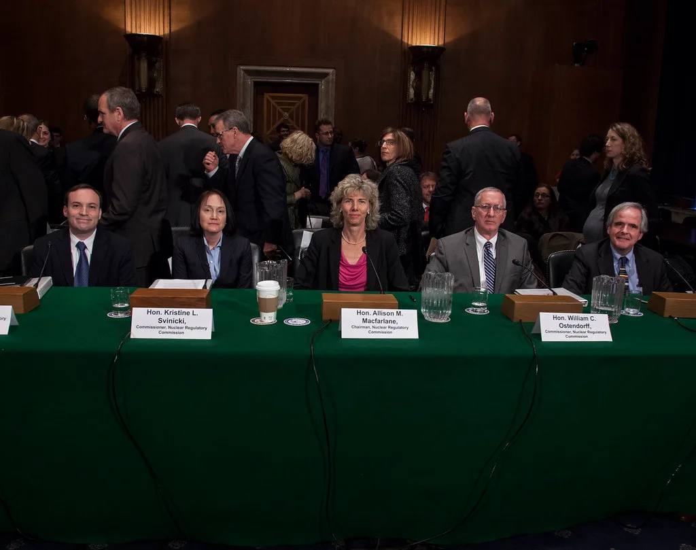

금리 두 번 올린 신현송, 첫 국감서 '가계부채 엇박자' 쟁점 직면
신현송 한국은행 총재가 12일 취임 후 처음으로 국회 국정감사에 출석해 의원들의 질의에 답했다. 신 총재는 올해 들어 두 차례 연속 기준금리를 올리며 통화정책 방향을 긴축 쪽으로 틀어온 만큼, 이번 국감에서는 금리 인상의 배경과 향후 통화정책 운용 방향을 둘러싼 질의가 집중적으로 이어졌다.
한국은행은 국회에 제출한 국정감사 업무현황 보고서에서 국내 경제가 반도체 경기 호조에 힘입어 올해 성장률이 크게 높아졌고, 내년에도 이런 견조한 성장세가 이어질 것으로 내다봤다. 다만 중동 정세 불안과 글로벌 인공지능 투자 흐름의 변화가 성장 경로에 변수로 작용할 수 있다는 점도 함께 짚었다. 반도체 수출이 받쳐주는 지금의 성장세가 내수나 고용 등 다른 지표로 얼마나 확산되고 있는지를 묻는 질의도 이어졌다.

이날 국감에서 가장 뜨거운 쟁점으로 떠오른 것은 가계부채를 둘러싼 정부와 한국은행의 정책 방향 차이였다. 정부가 수도권 주택공급 확대와 함께 가계대출 증가율 관리 목표치를 끌어올리고 확장적 재정정책을 펴고 있는 반면, 한국은행은 물가와 금융안정을 이유로 긴축적인 통화정책 기조를 이어가고 있어 두 정책 축이 서로 다른 방향을 가리키고 있다는 지적이 나왔다. 의원들은 통화·금융·재정정책 간 공조가 제대로 이뤄지고 있는지를 집중적으로 따져 물었다.
수도권을 중심으로 한 집값 상승세와 외환시장 안정 방안도 주요 질의 대상에 올랐다. 의원들은 한국은행이 두 차례 기준금리를 올렸음에도 수도권 주택시장의 과열 조짐이 꺾이지 않고 있다는 점을 지적했고, 신 총재는 추가 금리 인상 가능성을 열어두면서도 물가와 금융안정 상황을 종합적으로 살펴 신중하게 결정하겠다는 취지로 답했다.
한국은행은 올해 7월 기준금리를 3년 6개월 만에 2.75%로 올린 데 이어 8월에는 한 달여 만에 다시 3.00%로 인상하며 두 달 연속 금리를 끌어올렸다. 이례적으로 짧은 기간에 연속 인상이 이뤄진 데는 가계부채와 집값 상승을 억제하려는 목적이 컸던 것으로 풀이되는데, 정부가 그 사이 가계대출 관리 기조를 다시 완화하는 모습을 보이면서 정책 간 엇박자 논란이 커진 셈이다. 신 총재는 두 차례 인상 이후에도 수도권을 중심으로 대출 수요가 쉽게 꺾이지 않고 있다는 점을 거듭 지적받았다.
이번 국감을 계기로 통화당국과 재정당국 간 정책 조율 필요성이 다시 부각될 것으로 보인다. 신 총재는 취임 후 첫 국감에서 금리정책의 독립성을 강조하면서도 정부와의 소통을 이어가겠다는 원칙적 입장을 밝혔으며, 향후 금융통화위원회에서 추가 인상 여부를 어떻게 결정할지가 시장의 다음 관심사로 떠오르고 있다.
시장에서는 이번 국감에서 나온 발언들이 당장의 통화정책 변화로 이어지기보다는, 연말로 갈수록 거세질 것으로 보이는 가계부채 관리 논쟁의 서막으로 받아들여지는 분위기다. 정부가 경기 부양과 주택공급 확대에 무게를 두는 사이 한국은행이 금융안정을 앞세워 선제적으로 금리를 두 차례나 올린 전례가 있는 만큼, 수도권 주택시장 지표와 가계대출 증가세가 다음 금융통화위원회 회의까지 어떻게 움직이는지가 추가 인상 여부를 가를 핵심 변수로 꼽힌다.